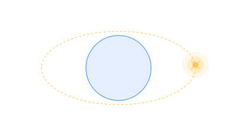

Sputnik 1 · October 4, 1957
An 84-kg Soviet aluminium ball goes into a 96-minute orbit. Spaceflight is real now — for everyone, all at once.

101 · zoom in
October 4, 1957, Baikonur Cosmodrome, Kazakh SSR: Sergei Korolev's R-7 rocket lofts a 58-cm aluminium sphere with four whip antennas into low Earth orbit. The sphere broadcasts a single beep every 0.4 seconds at 20 and 40 MHz. Anyone on Earth with a shortwave radio can hear it — and they did. The space age starts that night.
Sergei Korolev, the Soviet chief designer, ran the R-7 programme as an ICBM project — the satellite was a sideshow. His engineering team launched a 1.5-ton biological satellite (Sputnik 2, with the dog Laika) one month later. Korolev's name was a state secret his entire life; he was credited only as "Chief Designer" until obituary in 1966.
America had no operational rocket capable of orbit in 1957 — Vanguard exploded on the launch pad in December. Explorer 1 finally reached orbit January 31, 1958, on a von Braun Redstone derivative. The "Sputnik shock" launched NASA (1958), the National Defense Education Act, and the entire space race that would define the next decade.
Vehicle: R-7 Semyorka, the world's first ICBM, repurposed. Five strap-on first-stage boosters around a sustainer core. The same family of rockets (heavily evolved) launches Soyuz crews to ISS today — direct hardware lineage from Sputnik.
Sputnik orbit: perigee 215 km, apogee 939 km, inclination 65°, period 96 minutes. It re-entered January 4, 1958, after 92 days and 1440 orbits.
Key personnel beyond Korolev: Tikhonravov (rocket designer), Keldysh (mathematician — orbit calculations), Glushko (rocket-engine designer for the R-7 boosters). Russian engineering had absorbed German V-2 work after WWII (the Soviets captured the Mittelwerk facility) but the R-7 was substantively native.
American reaction was outsize: Sputnik was technically simple (a radio beacon) but politically enormous. The fact that the USSR could put 84 kg in orbit meant they could put a thermonuclear warhead anywhere on Earth via the same rocket. ICBM panic drove a decade of US R&D acceleration.
Sputnik's legacy: NASA founded July 29, 1958. ARPA (later DARPA) founded same year. The civilian US space programme was a direct response.